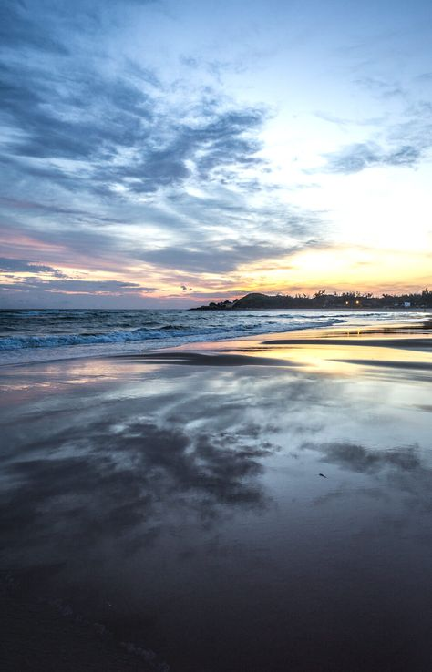
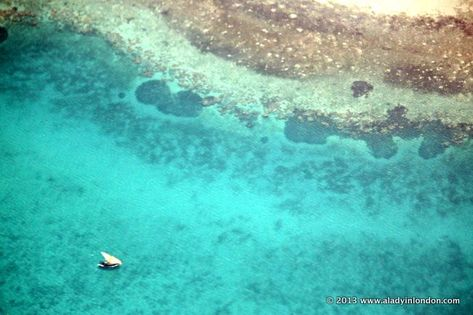
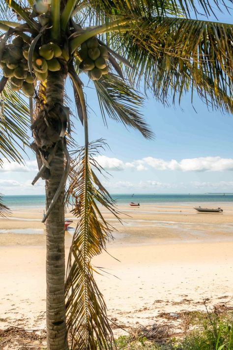
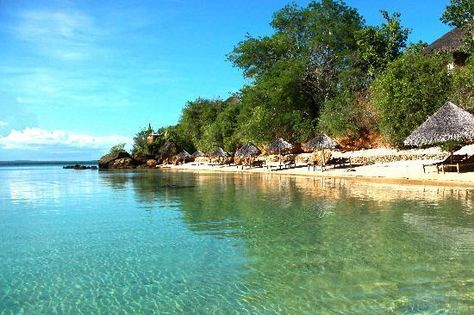
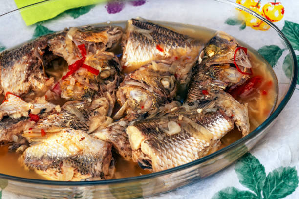
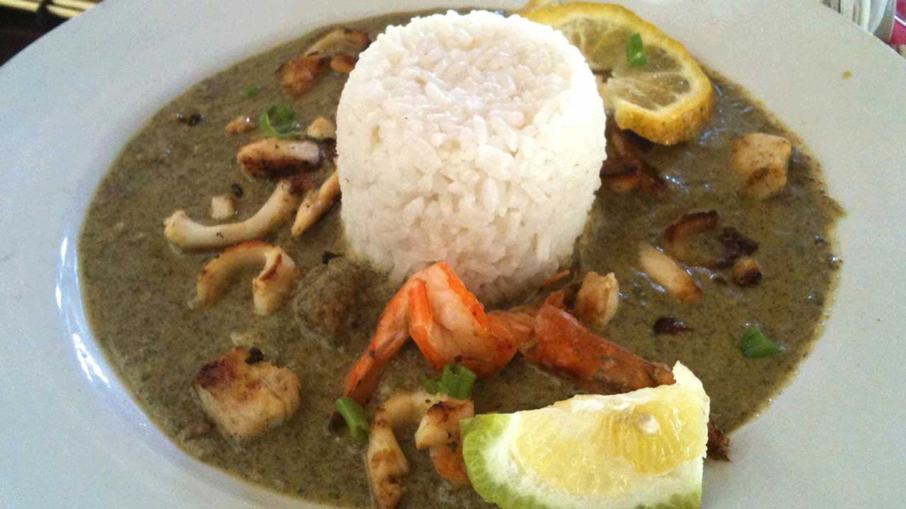

Plongé sous-marine à l'Archipel des Quirimbas
Description
Encore peu connu des plongeurs connaissent cet endroit, le Mozambique s’impose pourtant comme l’une des plus belles destinations africaines pour un voyage plongée. Toute la côte regorge de zones de plongées. Ce pays est totalement oublié du tourisme de masse et c’est tant mieux pour nous, pourtant il dévoile des atouts indéniables. L’atout principal du Mozambique est son canal maritime, réputé pour sa grande population de poissons pélagiques. Pour votre séjour plongée au Mozambique, vous n’aurez que l’embarras du choix, car du Nord au Sud, la côte propose des hébergements allant du lodge simple à l’hôtel de luxe.



Activités
Au large de ses 2 500 km de côte, le Mozambique abrite une vie sous-marine foisonnante. Plonger ici fait partie du voyage. C’est immanquable. Si le snorkeling vaut déjà le détour, les amateurs de grand bleu, curieux ou aventuriers, iront plus loin. Du nord au sud, la côte mozambicaine est ponctuée de superbes spots de plongée, des lieux phares et de magnifiques récifs, accessibles grâce à des centres de plongée indépendants ou attachés aux hôtels, tous très bien organisés et professionnels. Ici, les plongées se font le plus souvent en plein océan, les plus beaux spots étant au large des côtes, parfois à 40 km. L’avantage, c’est que les lieux sont plutôt complémentaires. Il serait donc dommage de venir au Mozambique pour expérimenter seulement un de ces récifs lors d’un voyage dédié à la plongée. La variété de la faune est réellement spectaculaire. Vous croiserez des tonnes de poissons.


Gastronomie
Au Mozambique les savoureux fruits de mer ont la part belle : gambas, langoustes, crabes, poissons, calamars et coquillage.
La cuisine d’influence portugaise est omni présente.
Irrésistibles pâtisseries portugaises et fruits tropicaux.
Le plat national populaire Mozambicain est le poulet frites (frango com batatas fritas) !
De nombreuses fameuses bières sont produites au Mozambique : 2M, Laurentina, Impala, Dorada. Les vins sont importés essentiellement d’Afrique du sud et du Portugal.
L’eau, sauf dans les grandes villes, est potable. De nombreux lodges offrent de l'eau pure ou purifiée.



Historique
Le Mozambique a vu se succéder sur ses terres de nombreux peuples et cultures depuis les premiers Bantous en l’an 200. En 1498, le navigateur portugais Vasco de Gama débarque à Inhambane, suite à quoi le Mozambique deviendra une colonie portugaise jusqu’à son indépendance le 25 juin 1975. Une indépendance soldée par quinze ans de révolte jusqu’à ce que l’État portugais cède le pouvoir à Samora Machel, à la tête du Frelimo. Une paix de courte durée. Dès 1976, le mouvement politique et militaire Renamo prend les armes contre son propre pays. S’ensuit une guerre civile dévastatrice jusqu’aux accords de paix de 1992. Puis, Joaquim Chissano est élu président de la République du Mozambique, lors des premières élections libres en 1994. La Renamo se rebellera à nouveau, laissant les villages du nord dans la crainte d’attaques armées. Mais c’est après plus de quarante ans d’indépendance que le pays a, espérons-le, définitivement posé les armes, en août 2019.
Guide
- Assurez-vous d'avoir les certifications nécessaires : Avant de plonger dans l'archipel de Quirimbas, vous devrez être certifié par une agence de plongée reconnue.
- Choisissez le bon moment pour plonger : La saison des pluies à Quirimbas est de novembre à avril. Il est donc préférable de planifier votre plongée entre mai et octobre, lorsque le temps est plus sec et la visibilité sous-marine est meilleure.
- Réservez votre voyage et vos équipements : Réservez votre voyage auprès d'une agence de voyage ou d'un centre de plongée fiable. Assurez-vous également de réserver votre équipement de plongée avant votre voyage.
- Vérifiez votre équipement : Avant votre plongée, vérifiez soigneusement votre équipement pour vous assurer qu'il fonctionne correctement. Assurez-vous que votre masque s'adapte bien et qu'il n'y a pas de fuites.
- Familiarisez-vous avec les sites de plongée : Avant de plonger, assurez-vous de connaître les sites de plongée disponibles dans l'archipel de Quirimbas. Demandez à votre guide de plongée de vous fournir des informations sur les différents sites de plongée.
- Suivez les règles de sécurité : Pendant votre plongée, suivez les règles de sécurité établies par votre guide de plongée. Restez avec votre groupe de plongée, ne touchez pas la vie marine, ne plongez pas en apnée et ne remontez pas trop rapidement à la surface.
- Respectez l'environnement : Lorsque vous plongez, assurez-vous de respecter l'environnement sous-marin. Ne touchez pas la vie marine, ne prenez rien avec vous et ne laissez rien derrière vous.